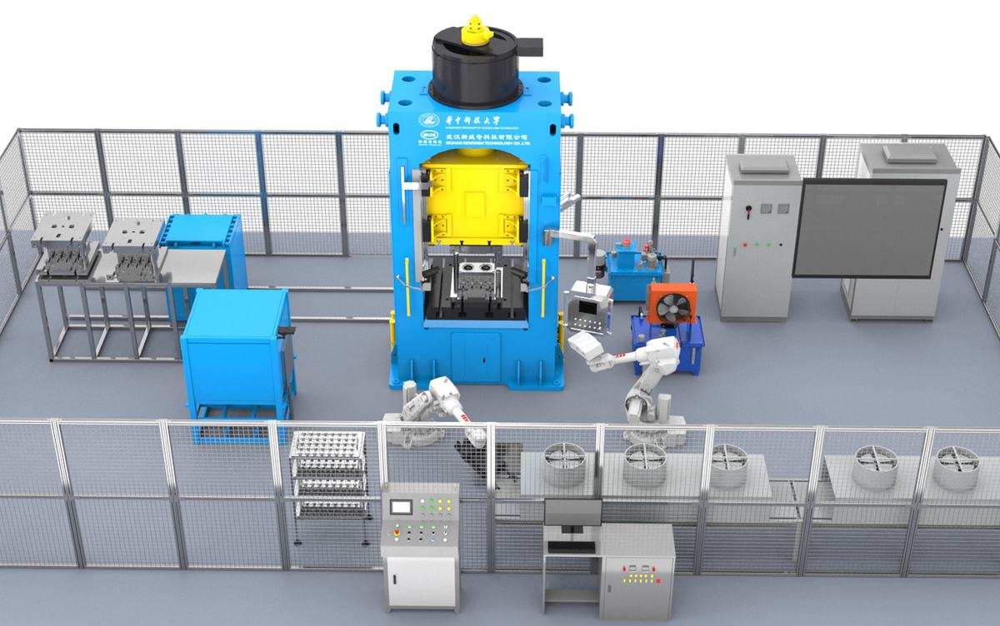
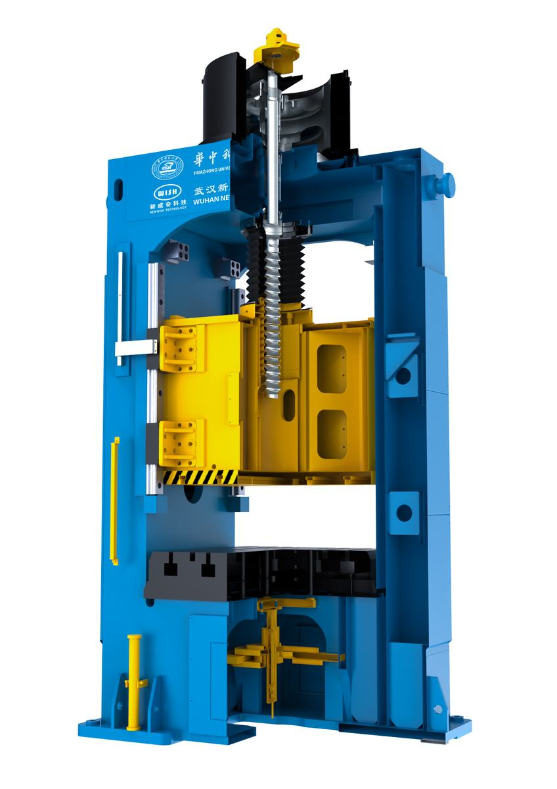
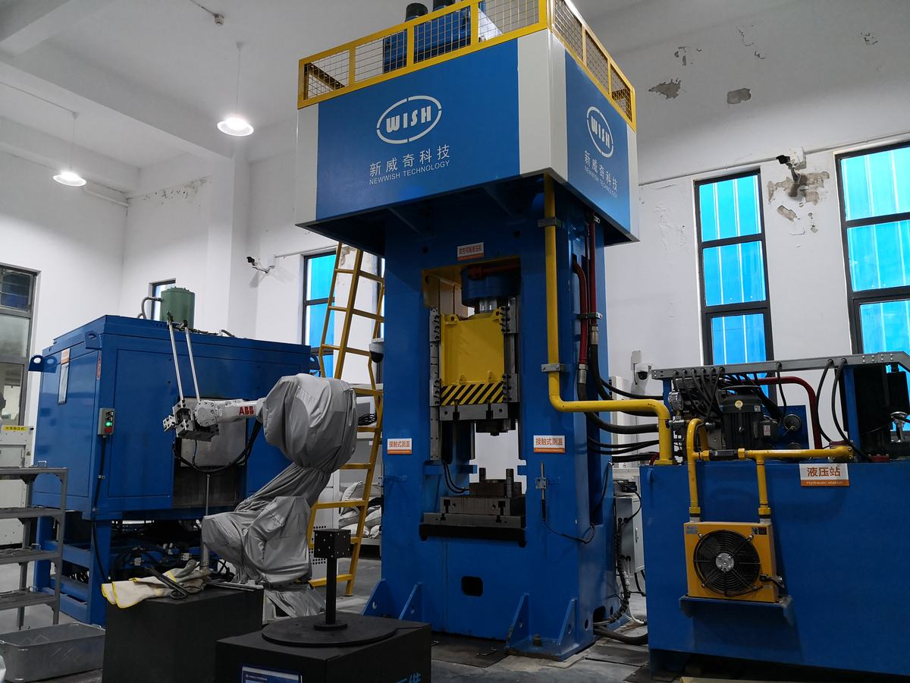

锻造是制造高性能零件的重要加工工艺，但锻造过程的工艺影响因素多、工况扰动随机性强，且缺乏在线监测和调控技术，导致产品质量波动大，制约了军车控制臂、重型转向节等高性能锻件的制造。智能制造技术能够实现多因素复杂工况下的优化决策，提升产品质量和制造水平，对推动我国由制造大国向制造强国转型具有重要意义。本项目在开展锻造工艺及装备的设计创新时，率先将智能化技术应用于锻造全过程，设计出精确感知、智能学习和灵活调控的智能化锻造生产线，解决工况扰动引起的质量不稳定难题，从而实现高性能锻件制造，满足国防战车等关键装备的需求。
项目从生产线的执行、感知和决策三个方面提出全新的设计理念，主要设计创新包括：
1）针对传统压力机多级传动导致响应慢、精度低，难以满足实时高响应高精度调控的问题，设计了由伺服电机直接驱动滑块的高响应传动机构，以及平-弧面结合的可控防偏载精密导向结构，并将训练后的人工神经网络计算模块内置于运动控制系统，研制出新型智能伺服直驱压力机，实现了锻造速度等关键参数的快速精确调控。
2）针对锻造工艺状态随机非线性扰动难以精确感知的问题，设计了由工业相机、热成像仪、双目扫描仪等构成的在线检测装置，开发了上料位置、坯料温度、模腔温度和锻件形状/身份识别的智能图像获取方法，研发出基于机器视觉的多参数变量精确感知系统，实现了锻造参数和工况扰动的精确感知。
3）针对工况扰动难以实时优化调节的问题，设计了锻造信息数据库，开发了工艺-扰动-质量的自学习深度神经网络模型，构建了智能工艺决策系统，研发了设备间通讯协议，实现了锻造生产全链条数据驱动。最终设计出集成感知、决策和执行系统的智能锻造生产线，实现高性能锻件的制造。
基于上述设计创新，建立智能化锻造生产线7条，实现了军车控制臂、重型转向节等锻件的稳定生产，生产线运行效率与国际先进的德国拉斯科水平相当；产品合格率达99.8%，尺寸精度达±0.5mm，同时节材12%，节能24%。由湖北省机械工程学会组织、丁汉院士为主任的鉴定委员会认为：整体技术处于国际先进水平。
近3年新增产值6.4亿元，利润7600万元，产生了显著的经济效益。项目获发明专利15项，软件著作权9项，在国际重要期刊发表论文70余篇，制定智能制造相关国家标准3项，并支撑企业获得制造业单项冠军产品、国家级专精特新小巨人等荣誉，有效推动了锻造生产方式的革新，引领行业向智能化转型升级。
（1）高响应高精度智能伺服直驱压力机
传统伺服螺旋压力机通过伺服电机驱动齿轮或者皮带等多级中间传动部件，间接带动螺杆和滑块运动，由于传动链条长、间隙大，导致整个传动系统的响应速度慢、精度低，难以满足智能锻造生产所需的实时高响应高精度调控。为此，本项目探明了伺服直驱传动系统的重载响应规律，分析了电机直接驱动螺杆和滑块的运动学模型，设计了一种高响应高精度智能伺服直驱压力机。其设计创新体现在以下三个方面：1）在传动系统结构设计方面，采用大功率交流永磁同步伺服直驱电机的转子与螺杆直接连接，将电机扭矩直接传递给螺杆，同时驱动滑块运动，实现了零传动，提高了滑块速度变换时的响应速度。2）在滑块运动导向结构设计方面，揭示了全能量作用下压力机各部位的弹性变形规律，优化了应力集中区域的局部加强结构，设计了高刚性框架机身和平-弧面结合的可控防偏载精密导向结构，利用平面与弧面多重约束提高设备抗偏载能力，保证了滑块运动的高精度导向。3）在运动控制系统设计方面，构建了螺杆负载及磨损量、电机转速及电流与滑块速度之间的人工神经网络模型，设计了高精度智能运动控制系统，基于上位机系统智能规划的目标运动曲线，结合实时采集的螺杆负载、磨损量（实际位移与理论位移的偏差值）、电机转速、电流等数据，通过人工神经网络模型和遗传优化算法获得所需的滑块速度和转矩，进而采用矢量控制方式对伺服电机进行调整，实现了全闭环控制。设计的智能伺服直驱压力机能够实现匀速/变速/往复渐进等多种运动模式，并根据实时工况智能优化电机参数，实现滑块的快速、精确和平稳调节，为执行不同锻造速度曲线奠定了基础。
（2）基于机器视觉的多参数变量精确感知系统
锻造生产的工艺参数和状态变量多，受外界扰动影响的随机性强，因此，必须实现锻造工况的实时全方位精确感知，才能实现生产过程的智能精准调控。但锻造过程中主要工艺参数（如坯料温度、模腔温度）以及状态变量（如上料位置、锻件形状）呈非线性波动，采用传统的接触式温度传感器、红外测温枪、光栅尺等检测装置，难以获得全面精确的数据。为此，本项目设计了基于机器视觉的多参数变量精确感知系统，利用工业CCD相机、红外热成像仪、双目蓝光扫描仪等机器视觉设备获取坯料温度、模腔温度、上料位置和锻件形状/身份识别等信息，并利用光栅尺、压力传感器等获取滑块位移、压力机载荷等非空间分布的物理量信息，实现了锻造工艺状态和锻件质量的全方位实时检测。采集的实时图像经现场总线通讯接口传送至上位机系统，再由开发的图像智能识别软件提取关键数据。对于上料位置图像和锻件形状图像，经颜色聚类分割和二值化处理，提取出物体轮廓，通过与标准图像对比，获得轮廓特征的关键点坐标。对于热成像采集的温度数据，沿平面坐标轴方向进行稀疏化，提取出不在合理温度范围的温度值及其坐标点。随后，智能识别出的图像数据被存储到锻造信息数据库，用于工艺过程的大数据分析和人工神经网络建模。
（3）全链条数据驱动的智能锻造生产线
传统的锻件质量控制依赖于合理的工艺方案设计和严格的生产过程管控，但生产线难以避免扰动因素的影响，导致生产过程不稳定，出现批量废品、故障停机等问题。由于扰动的随机性和不可预测性，难以采用预先设计变量的形式进行研究和建模，也难以在线进行实时优化。为此，本项目在生产线控制系统中设计了锻造信息数据库，记录生产线检测装置采集到的各项数据；并基于数据库内积累的大量数据和专家知识，利用特征提取、数据挖掘等深度学习技术，开发出工艺参数、工件位置偏差、参数扰动、材料性能与锻件质量之间的深度人工神经网络模型。同时，设计了锻造压力机、工业机器人、换模装置、自动润滑站、检测装置以及加热炉等设备之间标准的通讯协议、通讯模块和设备集成接口，实现了生产线设备的互联互通。最终，结合压力机速度、加热炉温度、喷淋润滑量灵活可调的特点，研发了智能工艺决策系统，设计了全链条数据驱动的锻造生产线。生产线运行时，根据实时采集到的坯料温度、上料位置、模腔温度等信息，利用深度人工神经网络模型预测锻件质量，并结合遗传算法优化获得当前工况下满足锻件质量要求的最优的压力机速度曲线、加热温度和润滑剂喷淋量，通过现场总线传输指令，控制伺服直驱压力机等设备按优化的工艺参数执行，以获得合格锻件。此外，智能工艺决策系统还可以根据锻件尺寸超差情况判断模具是否磨损过量或出现裂纹失效，利用自动换模装置实现模具快速更换。该智能锻造生产线实现了锻造过程从经验式向定量化、智能化的转变。
在设计智能化锻造生产线时，本项目结合锻造工艺原理和成形特点，基于理论分析并采用精确数值仿真和智能数学建模等先进方法，进行科学的设计。具体包括，针对压力机结构设计，利用大型ANSYS有限元软件进行了框架机身在满负载情况下的强度和刚度分析，指导了机身结构优化；针对压力机驱动控制系统的设计，利用Matlab/Simulink进行了运动曲线仿真，验证了运动曲线加减速算法的可靠性；针对生产线布局和时序的设计，采用RobotStudio模拟了整个生产过程以及各设备的运动状态，分析优化了信息传输、运动干涉和生产节拍等。在设计上位机智能控制系统时，基于Pycharm编译器，采用Python语言开发程序，可以更好地利用人工智能方面的图像识别、神经网络建模、遗传算法优化等工具。上述设计方法都是以科学的理论模型和高精度的算法为支撑，具有很强的科学性。利用上述方法所获得的结果能够为智能化锻造生产线的设计和控制系统的开发提供科学指导。
本项目实现的核心功能是锻造生产线的智能化。项目在设计时，紧紧围绕感知、决策和执行三个方面进行创新开发： 1）配置了以机器视觉设备为核心的工况在线感知系统，实现了对坯料、模具、压力机及锻件状态的全面监测；2）设计了基于生产大数据进行自学习的智能控制系统，根据现场实时采集到的数据改进智能神经网络模型，保证了正向锻件质量预测精度和反向工艺参数优化精度；3）设计了集成新型高响应高精度伺服直驱压力机、工业机器人、自动换模装置、自动润滑站等设备的锻造生产线，并采用现场总线技术实现了各设备间的互联互通，生产线根据智能控制系统传送的信号，自动调节压力机速度、加热温度、润滑剂喷淋量等工艺参数，实现了对工况的实时调节。通过上述设计和开发，有效实现了锻造生产线的智能化调控。

